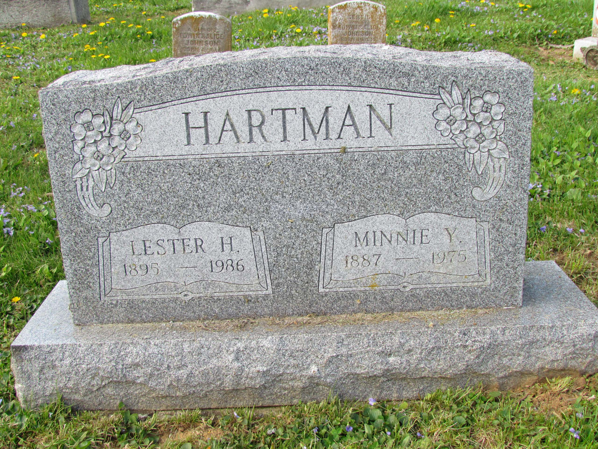

Lester Heckman HARTMAN was an uncle of Titus HARTMAN and a twin brother of Chester Heckman HARTMAN. He was married to Minnie Yoder MERKEL (1887-1975), and they had no children.
During the 1970s, Minnie's brother Herbert Leroy MERKEL (1900-1985) lived with Lester and Minnie at West Philadelphia Avenue in Boyertown, PA. Herbert had been blinded in a childhood accident: while playing in a field, he fell into a cornstalk and was blinded in one eye. The resulting infection took his vision in the other eye as well. Herbert continued to live with Lester after Minnie's death in 1975.
Lester and Minnie are buried together at Fairview Cemetery in Boyertown, PA.
